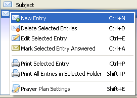

The following are the ways to compose a new entry:
- Clicking this
 toolbar button.
toolbar button.
- Choosing this action from the Entry menu.

- Choosing this action from the Entry context menu (right-click menu).
 - Pressing Control+N on the keyboard.
Below is a screenshot of the Compose dialog to enter a new entry:

With this dialog, you can compose a new entry. The first thing to do is give the entry a subject. This subject appears in the entry list on the right side of journal screen.
The next text box is for the body of the entry. This is where you would compose the main part of the new entry. The entry text will be visible from the entry preview screen on the right side of the journal screen as well as in any print out.
If the new entry is for prayer, an answer text box is present. This is where you would journal about how God has answered your prayers. For praise and general entries, this text box does not appear. The answer text will be visible on everything the entry text is visible except when the answer is empty.
The scripture text box is where you would supply a scripture passage from your preferred translation of the Bible. Simply type it in or copy and paste it in this text box. If there is scripture text, this will be visible everywhere the entry text appears.
There is a drop down menu for the type of journal entry you wish to use. The first is prayer and then praise and general. The other drop down menu is for the status of the entry. You can choose from active, answered or inactive. If you mark an entry as inactive, the entry is moved from the folder it was in to the Inactive folder.
Once you have saved the new entry, the Prayer Plan Settings button will be enabled so you can set your preference on how the entry will appear in the Prayer Plans. This is completely optional and does not need to be done to create an entry.
You can use the Save button to save your entry at any point when you compose the entry. This will not close the compose screen. To close this screen you can click on the Close button or the "X" at the top right corner of the screen.
The compose screen also allows you to attach multiple images to the entry. There isn't a limit on how many pictures you attach. If images are attached, they will be visible everywhere the entry text appears. When you press the Add Image button, you are presented with a find file dialog to choose the image. Below is a screenshot showing an image attached:

To delete an attached image, click on the image and click the Delete Image button. Below is a screenshot showing the border around a selected image: